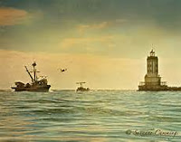

|
＜安穩港口＞
1.我靈惶惶然如漂流大海中，罪重擔緊壓住我心，忽聽見慈聲說道你來就我，我就近安穩的港口。
2.我願將自己投靠祂懷抱裡，用信心緊緊捉住祂，我心安靈靜罪鎖鏈都脫離，那安穩港口就是主！
3.我靈要歌唱因耶穌醫治我，這故事雖舊而猶新，誰願意就主主必為你舵手，領你進那安穩港口。
4.朋友請你來主耶穌在等你，祂有權能願保護你，請你把你靈拋錨安穩港口，讚美說慈愛主救我。
（複歌）
我將我靈魂拋錨安穩港口，決不再四處漂流；海途中狂風暴浪無奈我何，因耶穌是我避難所。
作曲者是吉而模（Henry L.
Gilmour，1836∼1920年），出生於愛爾蘭，10多歲時隨父母移居美國，是一位虔誠的衛理公會信徒，從事牙醫工作。他每年只工作8個月，利用另外4個月暑期時間在夏令營負責音樂事工。有獨唱的恩賜，也是一位受人愛戴的詩班指揮家。
吉而模在世最後的25年中，專心寫福音詩歌服事神，與寇伯克（William J.
Kirkpatrick）合編了許多福音詩歌集。〈安穩港口〉（The Haven of Rest）就是他寫作的著名聖詩。
我靈惶惶然如漂流大海中，罪重擔緊壓住我心，忽聽見慈聲說道你來就我，我就近安穩的港口。
心靈惶惶然不知所措，陷在無助、無人了解黑暗深淵的痛苦，你有過嗎？是否也常問道：人生有意義嗎？人活著的目的是什麼？人生的目的地是哪裡？讓我們仔細想想生活中的一些經歷，過程當中如果愉快、受激勵、有收穫、增長了見識，我們就會覺得有意義有價值。由此可知，對「意義」的認定存在於過程中。
可是，許多事實證明人雖具有追求意義的潛在能力，卻沒有在人生中體現出意義的實質。尤其令人嘆息的是，當人覺悟到自己並沒有活出有意義的人生時，時光通常已經流逝而無法挽回，想讓生命達到有意義境地的目標，也隨著生命的蹉跎而失落。
如果一個人不認識神，也可能不知道我們生命中第一個真正的仇敵，就是那不肯降服於神的「自我」，還有「自己的計畫」。雅各書4章1節：「你們中間的爭戰鬥毆，是從哪裡來的呢？不是從你們百體中戰鬥之私慾來的嗎？」
第二個真正的仇敵是撒但，牠擁有黑暗的權勢，毫不留情地恨惡你。以弗所書6章12節：「因我們並不是與屬血氣的爭戰，乃是與那些執政的、掌權的、管轄這幽暗世界的，以及天空屬靈氣的惡魔爭戰。」哪裡有自我高抬、驕傲，那裡就有魔鬼和牠的勢力。雅各書3章15節說：「這樣的智慧，不是從上頭來的，乃是屬地的，屬情慾的，屬鬼魔的。」
不認識神，一定也不知道這世界的人是主所造，是為了榮耀神，不能享受上帝的慈悲與大愛，只能在封閉的象牙塔裡打轉，對大自然一切現象自圓其說；遇到困境沒有出路，就自我安慰說：「一切都是命運的安排。」對人生境遇、人間百態無可奈何時，也只能消極地說：「沒看透是可憐的，看透了是可悲的。」「我靈惶惶然」，指的就是失去方向、失去人生意義的心靈吶喊！
沒有方向的人生，縱有光鮮亮麗的外表，內心卻是愁苦難當，近日藝人歡歡自殺即是一例。
我願將自己投靠祂懷抱裡，用信心緊緊捉住祂，我心安靈靜罪鎖鏈都脫離，那安穩港口就是主！
金碧士（Thomas
Kempis）說：「最高深和最有益的學問，就是對自己具有正確的認識和評價。」如何了解這句話呢？來看聖經的例子，路加福音18章13節說到稅吏遠遠站著，連舉目望天也不敢，只捶著胸說：「神啊，開恩可憐我這個罪人！」主耶穌說這稅吏比法利賽人有義。解決問題的關鍵不在於人自己的掙扎與努力，而在於求主赦免他的罪。
聖經明明指出我們是罪人，認識自己是「死在罪中」的罪人，就是正確認識了人的處境。外有仇敵魔鬼，內有邪情私慾這奸細，人的處境可憐又危險，陷溺在泥沼中無法自救、無法自拔，需要另外一隻手來拯救。約翰福音3章16節說：「上帝愛世人，甚至將祂的獨生子賜給他們，叫一切信祂的，不致滅亡，反得永生。」解決問題的關鍵不在於人努力掙扎，而在於接受赦罪的恩典。
聖經也告訴我們，上帝就是那位自我啟示者，就是真理。是我們價值的基礎，更是我們追求的方向，人生真正的目標。基督就是那安穩港口，願你投靠祂懷抱，用信心緊緊捉住祂。
我靈要歌唱因耶穌醫治我，這故事雖舊而猶新，誰願意就主主必為你舵手，領你進那安穩港口。
人生最重要的不是位置，而是方向；有方向，就一定有目的地。如果人類的歷史有方向、有目的，就決定了人生道路應當往哪裡走。羅馬書6章23節說：「因為罪的工價乃是死，唯有神的恩賜，在我們的主耶穌基督裡，乃是永生。」聖經指出，因為人類的墮落，罪的工價就是死，這世界的歷史方向是走向審判台，但基督是醫治者、拯救者。
約翰福音14章6節：「耶穌說：我就是道路、真理、生命，若不藉著我，沒有人可以到父那裡去。」什麼是有意義的人生呢？當生命與永恆者產生關聯，就是有價值、有意義的人生。人生有方向，生命有目的，有主作你舵手，領你進那安穩港口。
朋友請你來主耶穌在等你，祂有權能願保護你，請你把你靈拋錨安穩港口，讚美說慈愛主救我。
為什麼人活在世上常不滿意自己？誠如唐崇榮牧師所說，因為與生命的源頭脫節了，生命不完整；和愛的源頭脫節，對人生不滿意；和真理的源頭脫節，理性成為浪子；和價值的源頭脫節，所以有時候看自己沒有價值；和永恆者脫節，在世上感到飄蕩不安。
詩篇91篇1節說：「住在至高者隱密處的，必住在全能者的蔭下。」當將生命交託在上帝的手中，上主是生命舵手，祂有權能保護我們。我們也可以從心底深處高聲唱：「我將我靈魂拋錨安穩港口，決不再四處漂流；海途中狂風暴浪無奈我何，因耶穌是我避難所。」
註：歌曲資料引用自顧明明《古今聖詩漫談》。
文章來源：＜台灣教會公報＞第3254期
圖片來源：Serene 攝
http://www.pct.org.tw/article_church.aspx?strBlockID=B00007&strContentID=C2016092700023&strDesc=&strSiteID=&strCTID=CT0016&strASP=article_church
"THE HAVEN OF REST"
"Come unto Me, all ye that labor and are heavy laden, and I will
give you rest" (Matt. 11.28)
INTRO.: A song which tells us about the rest that we can have
through Jesus Christ is "The Haven of Rest" (#365 in Hymns
for Worship Revised and #496 in Sacred
Selections for the Church). The text was written by Henry
Lake Gilmour, who was born at Londonderry, North Ireland, on
Jan. 19, 1836. At age sixteen, he went to sea to learn
navigation, and when his ship landed at Philadelphia, PA, while
still a teenager he decided to stay and seek his fortune as an
emigrant to the United States. Learning the painter’s trade, he
was engaged in painting the lighthouse at Cape May, NJ, when he
met and married Letetia Pauline Howard in 1858. During the Civil
War, he served as a Union soldier with the First New Jersey
Cavalry and, having been captured, spent several months as a
Confederate prisoner at Libbey Prison. After the war, he
graduated from Philadelphia Dental School in 1867 and carried on
an active dental practice in New Jersey for several years.

However, Gilmour is best remembered as a gospel musician. In
1869, he moved to Wenonah, NJ, and in 1885 organized the
Methodist Church of Wenonah in his home, serving this church for
many years as a trustee, steward, Sunday school superintendent,
class leader, and for 25 years music director. In addition, he
was a widely respected song leader in revivals and camp
meetings, devoting ten weeks of his vacation time each year for
such work. For forty years, he directed the singing at Pitman
Grove Camp Meeting and did similar work at Mountain Lake Park,
MD, and Ridgeview Park, PA. In addition, he was a frequent
visitor to the Ocean Grove Camp in New Jersey, and through these
activities gained personal acquaintance with many writers and
composers of gospel hymns.
Gilmour himself was the author and composer of a number of
gospel songs and assisted in the editing of more than sixteen
hymnbooks. "The Haven of Rest" was likely produced in 1889. The
tune (Haven of Rest) was composed by George D. Moore (19th c.).
No other information is available about this itinerant
evangelist who was active in New Jersey and Pennsylvania in the
latter part of the 1800’s. The words and music were first
published in Sunlit
Songs, compiled in 1890 for John J. Hood of Philadelphia,
PA, by Gilmour, John Robson Sweney, and William James
Kirkpatrick. In 1906 Gilmour helped organize the Praise
Publishing Company in Philadelphia with Kirkpatrick and George
Sanville., He died at Delair, NJ, on May 20, 1920.
Among hymnbooks published by members of the Lord’s church during
the twentieth century for use in churches of Christ, the song
appeared in the 1937 Great
Songs of the Church No. 2 edited by E. L.
Jorgenson; the 1948 Christian
Hymns No. 2 and the 1966 Christian
Hymns No. 3 both edited by L. O. Sanderson;
the 1963 Abiding
Hymns edited by Robert C. Welch; and the 1963 Christian
Hymnal edited by J. Nelson Slater. Today it
may be found in the 1971 Songs
of the Church and the 1990 Songs
of the Church 21st C. Ed. both edited by Alton
H. Howard; the 1978/1983 Church
Gospel Songs and Hymns edited by V. E. Howard;
and the 1992 Praise
for the Lord edited by John P. Wiegand; in
addition to Hymns
for Worship, Sacred
Selections, and the 2007 Sacred
Songs of the Church edited by William D.
Jeffcoat.
This hymn encourages us to anchor our souls in Jesus Christ for
rest.
I. From stanza 1, we see the soul pictured as being in exile on
life’s sea
"My soul in sad exile was out on life’s sea, So burdened with
sin and distressed,
Till I heard a sweet voice saying, ‘Make me your choice;’ And I
entered the Haven of Rest."
A. Quite often in hymns, the soul is symbolically portrayed as
a ship tossed by a tempest: Matt. 8.23-27, Eph. 4.14
B. 1 of the primary reasons for this is that we’re burdened by
sin and distressed: Rom. 3.23
C. However, God offers a haven of refuge and shelter from the
storm and rain for those who come to Him: Isa. 4.4-6
II. From stanza 2, we see the soul yielding to the Lord
"I yielded myself to His tender embrace, and faith taking hold
of the Word,
My fetters fell off, and I anchored my soul; The Haven of Rest
is my Lord."
A.The means by which we yield to the Lord is obeying His word:
Rom. 6.17-18
B. The reason why we yield to Him in obedience is our faith
takes hold of His word: Heb. 11.6
C. And the result of yielding to Him in obedience by faith is
that He will provide us an entrance into that haven of rest: Ps.
107.23-30
III. From stanza 3, we see the yielded soul giving praise to the
Lord
"The song of my soul, since the Lord made me whole, Has been the
old story so blest,
Of Jesus, who’ll save whosoever will have A home in the Haven of
Rest."
A. Our souls should be filled with joy and thanksgiving to the
Lore for all His blessings: Lk. 1.46-47
B. The reason for this is that the old story so blest is the
message of salvation: Acts 2.21
C. And that story says that Jesus is the one who saves us:
Matt. 1.21
IV. From stanza 4 we see the soul now at rest with the Lord
"How precious the thought that we all may recline Like John, the
beloved and blest,
On Jesus’ strong arm where no tempest can harm, Secure in the
haven of rest."
A. The word "recline" suggests the idea of rest and peace:
Phil. 4.6-7
B. The picture of "the disciple whom Jesus loved," usually
believed to be John, leaning on Jesus’ bosom at the last supper
is used as a figure of the close relationship that we can have
with the Lord: Jn. 13.22-24
C. Thus, just as John leaned on His breast, we can lean on the
everlasting arms of the Lord in the tempests of life: Deut.
33.27
V. From stanza 5 we see the resting soul calling to others
"O come to the Savior, He patiently waits To save by His power
divine;
Come, anchor your soul in the haven of rest, and say, ‘My
beloved is mine.’"
A. Those who’ve already been saved by the power divine should
seek to lead others to Christ: 2 Tim. 2.2
B. Jesus patiently waits for all to come–in fact, He knocks at
the door of our heart: Rev. 3.20
C. And the hope that we have when we come to Christ is the
anchor of the soul: Heb. 6.19
CONCL.:
The chorus makes the point again that we must anchor our souls
to Jesus.
"I’ve anchored my soul in the Haven of Rest; I’ll sail the wide
seas no more.
The tempest may sweep o’er the wild, stormy deep; In Jesus I’m
safe evermore."
We can either continue to sail the wide seas of life, tossed to
and from with every wind of doctrine, or we can find safety from
these tempests in Jesus Christ. The song encourages us to look
to Him for "The Haven of Rest."
https://hymnstudiesblog.wordpress.com/2008/11/07/quotthe-haven-of-restquot/
Words: Henry Lake Gilmour (b. Jan. 19, 1836; d. May
20, 1920)
Music: George D. Moore (no information
available)
Links:
Wordwise Hymns
The Cyber Hymnal
Hymnary.org
Note: As you will see in the Cyber Hymnal’s
biographical note, Henry Gilmour, a dentist by
profession, became a gospel musician who contributed to
many song books during his years of ministry. But of
George Moore there seems to be no further information
beyond his name.
CH-1) My soul in sad exile was out on life’s sea,
So burdened with sin and distressed,
Till I heard a sweet voice, saying,
“Make Me your choice”;
And I entered the “Haven of Rest”!
I’ve anchored my soul in the “Haven of Rest,”
I’ll sail the wide seas no more;
The tempest may sweep over wild, stormy, deep,
In Jesus I’m safe evermore.
There’s a centuries-old proverb that
says, “Any port in a storm,” meaning that when you are
in desperate trouble, you’ll take whatever help you can
get. But there’s an even older proverb from a fable
about a fish that jumped “out of the frying pan into the
fire.” Sometimes the refuge we seek turns out to be no
refuge at all.
The abuse of drugs and alcohol provides an example.
Troubles may seem to disappear in a fog of blissful
oblivion, but the addict soon finds he has simply heaped
another grievous trial on things he struggled with
before. Tempting though it is for some, that’s not a
safe harbour for a troubled soul.
Especially in the days before air travel, the imagery
of trying to escape a tempest at sea was a common one. A
passage in Psalms describes “those who go down to the
sea in ships, who do business on great waters” (Ps.
107:23). There the ancient mariners see stormy waves
“mount up to the heavens [and] go down again to the
depths” (vs. 25-26), and “they [the sailors] reel to and
fro, and stagger like a drunken man, and are at their
wits end” (vs. 27).
In the New Testament, Luke, the author of Acts, gives
a whole chapter to a graphic portrayal of the perils of
sea travel (Acts 27). Paul had been arrested in
Jerusalem, accused by the Jews of acting and speaking in
ways contrary to the Law of Israel (21:28). But he
appealed to Caesar (in effect, the supreme court of the
empire), and was transported to Rome to stand trial
(25:12). On the way there he and his companions faced a
terrible storm at sea. However, though the ship was
lost, all 276 of the passengers and crew escaped (27:37,
44).
The earlier of these passages stresses the importance
and value of calling upon God for help in the desperate
hour. As the waves rose mountain high, we read, “Then
they cry out to the LORD in their trouble, and He brings
them out of their distresses….He guides them to their
desired haven” (Ps. 107:28, 30). A “haven” is a harbour,
a place of shelter and safety (cf. Acts 27:8). It
provides a lovely metaphor for the spiritual refuge that
is offered to the sinner, like the invitation to trust
in Christ for salvation: “Believe on the Lord Jesus
Christ and you will be saved” (Acts 16:31).
CH-2) I yielded myself to His tender embrace,
In faith taking hold of the Word,
My fetters fell off, and I anchored my soul;
The “Haven of Rest” is my Lord.
CH-3) The song of my soul, since the Lord made me
whole,
Has been the old story so blest,
Of Jesus, who’ll save whosoever will have
A home in the “Haven of Rest.”
It’s not a matter of, “Trust God and all your
troubles are over.” But there’s an inner peace and
confidence that can be ours when we look to Him. Even
so, sometimes that’s the last thing we do. Author George
MacDonald writes perceptively:
“How often we look upon God as our last and
feeblest resource! We go to Him because we have
nowhere else to go. And then we learn that the
storms of life have driven us, not upon the rocks,
but into the desired haven.”
CH-5) O come to the Saviour, He patiently waits
To save by His power divine;
Come, anchor your soul in the “Haven of Rest,”
And say, “My Belovèd is mine.”
Questions:
1) In what distress have you recently found the Lord to
be a safe haven?
2) Is their someone you can encourage, today, to seek
haven in Christ?
Links:
Wordwise Hymns
The Cyber Hymnal
Hymnary.org
https://wordwisehymns.com/2014/11/10/the-haven-of-rest/
|

 CD06-14-安稳港口 https://youtu.be/s40c8HNbRlg
CD06-14-安稳港口 https://youtu.be/s40c8HNbRlg